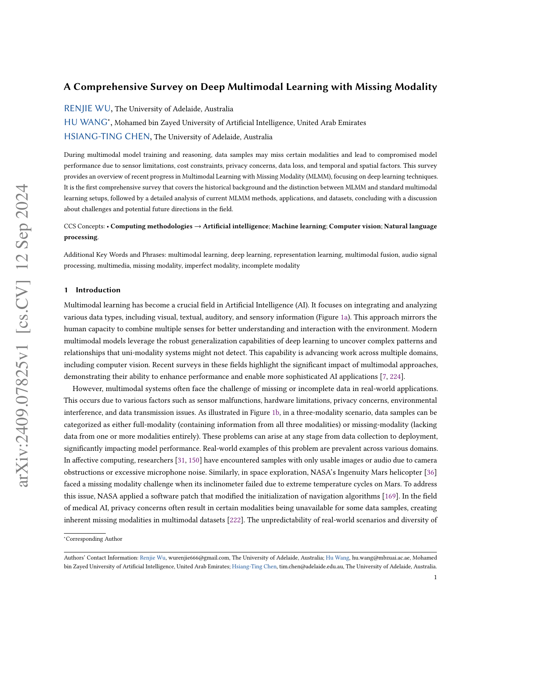
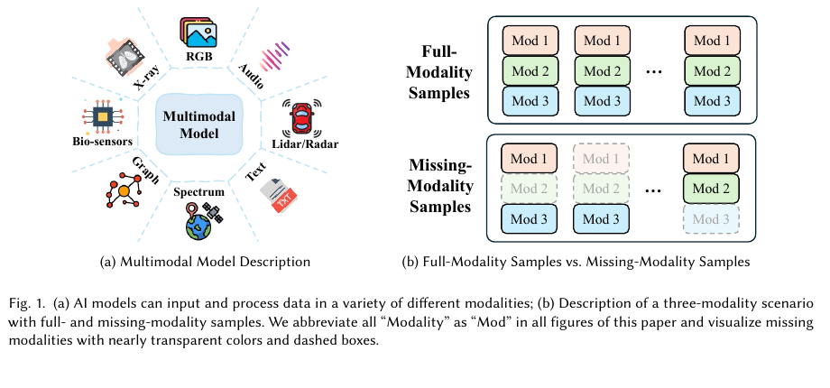
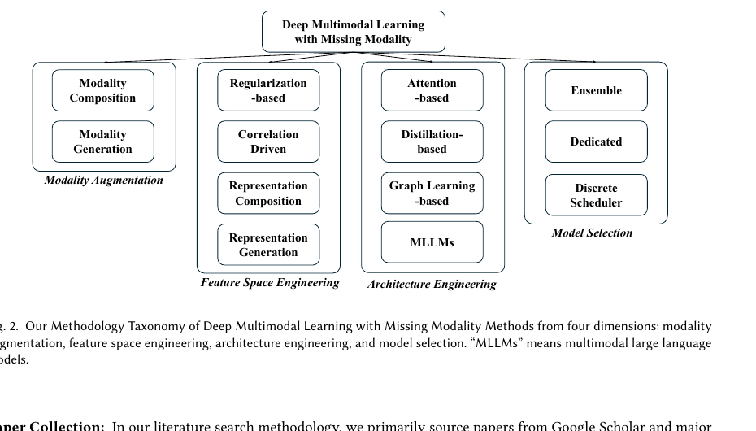
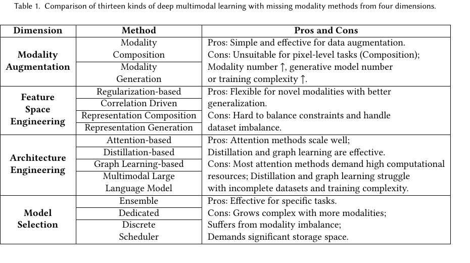
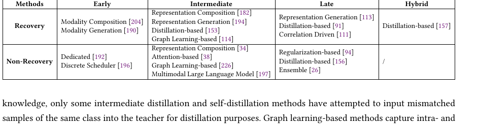
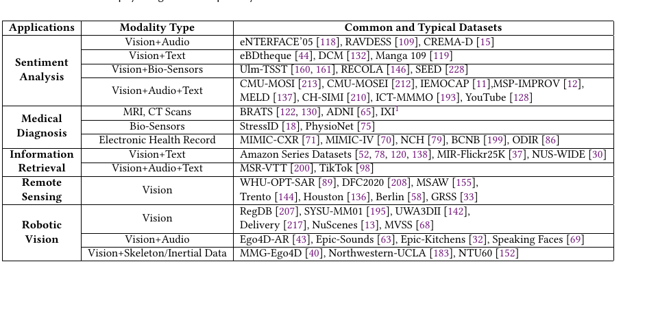

缺失模态多模态学习综述
把 2409.07825v1 从“文献条目”变成“可讲解的阅读材料”：核心问题、方法谱系、关键图表，以及它对多源降水临近预报的启发。
这篇文章的价值不是一个新模型，而是一张“缺模态鲁棒性”的方法地图。

论文首页截图，仅用于本地阅读辅助。原始文件在 papers/2409.07825v1.pdf。
辅助阅读和收集论文，是两种完全不同的产物
收集论文
目标是去重、分类、保留来源和核验日期。
重点是题名、链接、数据集、方法标签和为什么相关。
适合进入日报、索引、综述候选池。
辅助阅读
目标是把论文讲明白，让后续能复述、使用和迁移。
重点是文章结构、关键图表、概念关系和方法取舍。
适合做成 deck、讲义、实验设计清单。
论文研究的问题：模型不能假设所有模态永远完整
MLFM 假设训练和推理都能拿到全部模态；MLMM 要处理训练或推理时只剩部分模态的样本。
缺失可能来自传感器故障、成本、隐私、传输损坏、时空不同步。
难点不是“填空”本身，而是动态融合任意数量的可用模态。

原文 Figure 1：右侧用透明虚线表示缺失模态。阅读时先抓住这个输入设定，后面的所有方法都是围绕它展开。
整篇综述的主线：四个维度，十三类方法

原文 Figure 2：作者提出的核心 taxonomy。它是读这篇论文最重要的一张图。
Modality augmentation：在原始数据层面补模态。
Feature space engineering：在表征层面约束、组合或生成。
Architecture engineering：用注意力、蒸馏、图结构或 MLLM 适配缺失。
Model selection：不同模态组合调用不同模型或专家。
可以把 13 类方法压缩成一条处理链
Modality Augmentation：最直觉，但风险也最直觉
Composition：拿东西先垫上
零值、随机值、复制过去帧、检索相似样本。
优点：简单、可做 baseline、保留样本量。
风险：高缺失率或像素级任务里，容易制造误导。
Generation：生成缺失模态
AE、U-Net、GAN、Diffusion 生成原始模态。
优点：可恢复更丰富的信息。
风险：生成器重，且可能产生看似合理但不可靠的模态。
Feature Space Engineering：多数时候，比补原图更稳
用张量秩、结构正则等让表征更稳，对新模态扩展相对灵活。
用 CCA、最大似然、HSIC 等约束跨模态关联。
池化、加和、sign-max、token merging，直接把可用模态合成固定维度。
生成 missing representation，不必重建完整原始数据，比较适合接现有模型。
Architecture Engineering：让模型显式知道“谁缺席”
Attention
用 mask、fusion token 或 cross-attention 忽略缺失模态，适合 Transformer 类融合。
Distillation
全模态 teacher 教缺模态 student。强但常要求训练集有完整模态。
Graph
把模态、样本或传感器关系构成图，适合站网和不规则观测。
MLLM
统一 token 接口天然支持任意模态数，但缺少专门 benchmark，成本也高。
Model Selection：工程上可用，但会带来维护成本
Ensemble：不同单模态/多模态专家投票或加权，灵活但跨模态关系弱。
Dedicated：为每种缺失组合训练专门模型，效果可控但组合爆炸。
Discrete scheduler：用调度器按输入模态选择模块，适合系统工程。
模态越多，模型选择路线越像“平台工程”而不是“单模型论文”。
作者对 13 类方法的利弊做了横向归纳

原文 Table 1 截图。deck 中只作为阅读锚点，细节以本地 PDF 为准。
生成式和蒸馏式方法常见、有效，但很依赖完整训练样本。
注意力方法扩展性好，但训练资源和数据量要求更高。
模型选择路线适合具体任务，却容易被模态组合数拖累。
Recovery 是主流，但不是唯一答案
论文统计中，大多数工作专注于恢复缺失模态信息。
作者也指出，中间特征恢复占比最大，因为它比恢复原始数据少一些噪声和偏差，又比 late feature 保留更多模态特异信息。

原文 Table 2 截图：按 early / intermediate / late / hybrid，以及 recovery / non-recovery 重新分类。
缺失模态研究还偏应用孤岛，科学场景相对不足

原文 Table 3 截图：sentiment、medical、retrieval、remote sensing、robotic vision 是主要应用场景。
论文指出，很多公开数据集本身是完整的，缺失模态常通过人工随机丢弃来模拟。
自然科学、流式数据和多模态大模型缺失模态 benchmark 仍不足。
这正是天气多源融合可以补上的空白：缺失不是人为设定，而是业务常态。
论文最后的问题，其实很适合转成研究选题
放到多源降水临近预报里，缺失模态不是边角问题
每个模态都带 availability mask；模型在 full-source、single-source、leave-one-source-out、random missing 下都能推理。
如果把这篇综述转成你的实验设计，至少要加这 6 组测试
Full-source：所有输入源都可用。
Radar-only：业务兜底，必须稳定。
Leave-one-source-out：逐个移除卫星、站点、GNSS、NWP。
Random missing：随机缺失，报告均值和方差。
Severe missing：连续缺失或高缺失率。
Train vs test missing：区分训练集不完整和推理时缺失。
读完这篇，应该带走三件事
1. 先判断缺失发生在哪里
训练时缺失和推理时缺失不是同一个问题；很多方法只适合后者。
2. 特征级恢复是重要折中
相比原始模态生成，representation generation 更轻，也更少引入视觉伪影。
3. 气象多源融合有选题空间
真实业务缺失、流式异步、多源传感器，是 MLMM 综述里仍不足的科学应用场景。